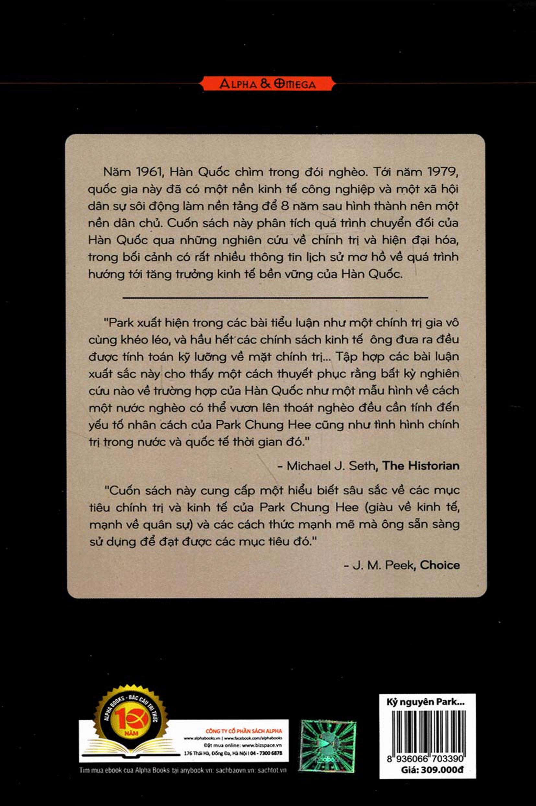

.
[1] Hình thức chính sách và thay đổi về thể chế diễn ra dưới kỷ nguyên Park chung Hee quá gián đoạn để có thể khiến phân tích chính trị quan liêu của Morton H. Halperin là xác đáng. Morton H. Halperin:
Bureaucratic Politics and Foreign Policy
[Tạm dịch:
Chính trị Bộ máy quan liêu và Chính sách Đối ngoại
(Washington, D.C.: Brookings Institution, 1974).
* Những chú thích của biên tập (BT) và người dịch (ND) sẽ được ghi chú rõ, các chú thích khác là chú thích từ bản gốc.
[2] Cà rốt và cây gậy: một chính sách kết hợp giữa phần thưởng và hình phạt để thúc đấy hành vi. (BT)
[3] Quan điểm mới về chính sách đối ngoại của Hoa Kỳ từ cuối những năm 1960 đến những năm 1970, do tổng thống R. M. Nixon công bố ngày 25 tháng 7 năm 1969 ở đảo Guam (Guam) và trong thông điệp gửi Quốc hội ngày 18 tháng 2 năm 1970.
[4] Joseph R. McCarthy là đại biểu Đảng Cộng hòa của bang Wisconsin nước Mỹ. Ông là người đã khởi xướng chủ nghĩa chống cộng điên cuồng lan truyền đi nỗi sợ hãi bị chụp chiếc Mũ Đỏ lên đầu (bị gán cho danh cộng sản). Vào lúc đó những người bị chụp Mũ Đỏ thường bị xa lánh như dịch bệnh. (BT)
[5] Cuộc đảo chính trong nội bộ chính phủ của Park vào tháng 10 năm 1972 khi ông tuyên bố hiến pháp yushin , bác bỏ hiến pháp hiện hành lúc bấy giờ, từ đó tạo điều kiện cho ông cầm quyền trọn đời. (ND)
[6] Maximilian Carl Emil Weber: (21/4/1864 - 14/6/1920) nhà kinh tế chính trị học và xã hội học người Đức, ông được nhìn nhận là một trong bốn người sáng lập ngành xã hội học và quản trị công đương đại. (BT)
[7] Kim Jong-pil: sinh năm 1926, là tướng lĩnh, chính trị gia và người sáng lập Cơ quan Tình báo Trung ương Hàn Quốc (Korean Central Intelligence Agency - KCIA), ngày nay là Cơ quan Tình báo Quốc gia. Ông cũng hai lần làm Thủ tướng Hàn Quốc trong các giai đoạn 1971-1975 và 1998-2000. (BT)
[8] Thuyết phụ thuộc là quan điểm cho rằng các nguồn lực chảy từ một “ngoại vi” của các nước nghèo và kém phát triển đến một “trung tâm” của các quốc gia giàu có, làm giàu quốc gia sau bằng mất mát của quốc gia trước. Luận điếm trung tâm của lý thuyết phụ thuộc là các nước nghèo bị bần cùng hóa vì các nước giàu được làm giàu bằng cách đưa các nước nghèo vào “hệ thống thế giới”. (BT)
[9] Chỉ huy hành chính (administrative guidance) là một thủ tục được chính phủ Nhật đưa ra trong Mục 2 của Đạo luật thủ tục hành chính năm 1993 như những “hướng dẫn, khuyến nghị, tư vấn hay những hoạt động khác mà nhờ đó một Cơ quan Hành chính có thể tìm được, trong phạm vi trách nhiệm hoặc các sự vụ thuộc thẩm quyền của nó, những việc chắc chắn có thể hay không thể làm đối với những người được định rõ để đạt được các mục tiêu hành chính mà vì nó những hành động đó là không thể tùy tiện.” (BT)
[10] Lý Thừa Vãn hay Rhee Syngman, (26/3/1875 - 19/7/1965) là vị tổng thống đầu tiên của Hàn Quốc, nắm quyền từ 15/8/1948 đến 22/3/1960. (BT)
[11] Vị trí đặc biệt ở Nhật Bản, chỉ những chính trị gia cố vấn cho vua và kiểm soát chính trị quốc gia. (BT)
[12] Chang Myon (Hán Việt: Trương Mẫn) (1899 - 1966) là Thủ tướng thứ hai và thứ bảy, là Phó Tổng thống thứ tư của Đại Hàn Dân Quốc. Ông đã được bổ nhiệm là Thủ tướng thứ hai của Đại Hàn Dân quốc ngày 23 tháng 11 năm 1950. Năm 1956, ông được bầu làm Phó Tổng thống. Sau khi chính quyển của Syngman Rhee (Lý Thừa Vãn) bị lật đổ bởi cuộc nổi dậy do sinh viên lãnh đạo, ông được bổ nhiệm là Thủ tướng của Đệ nhị Cộng hòa vào năm 1960. Tại thời kỳ Đệ nhị Cộng hòa, Hàn Quốc có một chính phủ nghị viện với một thủ tướng. Dù chức vụ tổng thống vẫn tồn tại, nhưng Chang Myon giữ vai trò như người đứng đầu chính phủ. Chính phủ của Chang Myon đã kết thúc khi Park Chung Hee tiến hành cuộc đảo chính thành công ngày 16 tháng 5 năm 1961, kết thúc Đệ nhị Cộng hòa. (BT)
[13] Chang Do-young sinh năm 1923, là tướng lĩnh cao cấp trong quân đội Hàn Quốc. Tại thời điểm năm 1961, ông là Tổng tham mưu trưởng, sau đó là chủ tịch Ủy ban Cách mạng Quân sự (MRC) rồi là chủ tịch Hội đồng Tối cao Tái thiết Quốc gia (SCNR) và đứng đầu nội các cho đến tháng 7 năm 1961 thì bị buộc tội phản cách mạng. Ban đầu bị kết án tử hình nhưng sau đó được giảm án còn chung thân rồi được phép sống lưu vong ở Mỹ. (BT)
[14] Nay là tỉnh Gyeongsangbuk-do (phiên âm Hán Việt: Khánh Thượng Bắc Đạo) là một tỉnh ở phía đông của Hàn Qụốc. Daegu là thành phố trực thuộc trung ương, không thuộc tỉnh về mặt hành chính nhưng nằm trong tỉnh về mặt địa lý. Gyeongsangbuk là nơi khởi sinh vương quốc Silla, nơi lưu giữ nhiều truyền thống văn hóa và sản sinh ra nhiều nghệ sĩ, nhà lãnh đạo và học giả nổi tiếng của Hàn Quốc. (BT)
[15] Học viện Quân sự Hàn Quốc, được thành lập vào tháng 5 năm 1964 với tên gọi là Học viện Quân sự Anh ninh Joseon (Joseon kyongbi sagwan hakkyo), đã đổi tên chính thức thành Học viện Quân sự Hàn Quốc vào tháng 9 năm 1948. Bắt đầu với chương trình hai năm, từ năm 1951 trở đi viện đưa vào chương trình học bốn năm và lớp học viên đầu tiên trải qua chương trình bốn năm tốt nghiệp vào năm 1955. Khóa năm 1955 gồm có Chun Doo-hwan và Roh Tae-woo, những người đã tổ chức một cuộc đảo chính thành công khác vào tháng 12 năm 1979. Quan hộ giữa Park VỚI KMA khá đặc biệt. Park vốn đặt nhiều hy vọng vào khóa đầu tiên của học viện, gồm những sĩ quan Hàn Quốc “thuần túy”, không phải những cựu học viên của các trường quân sự Nhật Bản như ông và những người chi phối quân đội vào buổi đầu của nước Cộng hòa Hàn Quốc. Trên thực tế, Chun và Roh xem Park là thầy của mình, vì tầm nhìn của ông về việc cuối cùng sẽ trao quyền kiểm soát quân đội Hàn Quốc cho các cựu học viên KMA đã ảnh hưởng rất lớn đến quyết định đảo chính của họ vào năm 1979 để giành lấy quyền lực từ những người giống như Jeong Seung-hwa vốn trở thành lãnh đạo thực sự của quân đội Hàn Quốc ngay sau vụ ám sát Park tháng 10 năm 1979.
[16] Sau cuộc đảo chính, nhóm Mãn Châu bắt đầu bị loại dần vì Park sợ rằng các thành viên phái này có thể thách thức quyền lực của ông. Park không chỉ định bất kỳ thành viên nào từ phái Mãn Châu vào những vị trí quan trọng trong chính phủ, kể cả sau khi đã thâu tóm quyền lực. Jeong Il-kwon vươn lên vị trí thứ hai, đảm đương trọng trách là Thủ tướng vào năm 1965, tuy nhiên vị trí này chỉ mang tính “hữu danh vô thực”. Sau cuộc đảo chính, Park bắt giữ Kim Dong-ha, Park Im-hang và Park chang-am - các thành viên của phái Mãn Châu tham gia vào cuộc đảo chính - vì họ đã phản đối kế hoạch chính trị của ông và vì tham vọng quyền lực của họ. Đại tướng Yi Han-lim, một vị tướng lừng danh khác trong phái Mãn Châu, bị trục xuất và phải đến Hoa Kỳ sau khi thất bại trong việc ngăn cản cuộc đảo chính trong ba ngày đầu tiên.
[17] Theo Cho Kap-che, Park có lẽ đã nghĩ về cuộc đảo chính khi ông còn ở dưới trướng của Đại tướng Yi Yong-mun vào năm 1952. Giấc mơ này kết thúc đột ngột cùng cái chết của Tướng Yi trong một tai nạn giao thông.
[18] Khi Park Chung Hee được chỉ định vào vị trí tư lệnh hậu cần ở Busan, ông bàn bạc việc đảo chính với những người đóng nghiệp, trong đó có một tiểu thuyết gia, Yi Pynng-ju, sau khi quan sát chiến dịch tranh cử bất hợp pháp của chính phủ ngày 15 tháng 5 năm 1960.
[19] Tổng thống Yun Po-sun và Thủ tướng Chang Myon đều cùng thuộc Đảng Dân chủ khi Đệ nhị Cộng hòa ra đời (tháng 6 năm 1960), nhưng lại lần lượt thuộc về Phái Cũ và Mới. Tình trạng bè phái này đâ làm tê liệt chính phủ Chang Myon trước khi tách Đảng Dân chủ làm hai vào năm 1962.
[20] Chiến tranh Triều Tiên nổ ra và chiến tranh lạnh sau đó biến quốc phòng thành ưu tiên quốc gia, buộc Hàn Quốc phải phân bổ 6-7% tổng sản phẩm quốc gia (GNP) và khoảng 50% ngân sách chính phủ cho lĩnh vực quốc phòng hàng năm trong suốt những năm 1950.
[21] Ngay trước cuộc đảo chính năm 1961, có tổng cộng 7.049 sĩ quan đã được đào tạo và giáo dục ở Mỹ kể từ khi thiết lập nước Cộng hòa Hàn Quốc. Chỉ trong năm 1953, - 983 sĩ quan được đào tạo ở Mỹ, trong khi chỉ có 613 thường dân có được cơ hội này. Park Chung Hee là một trong những người hưởng lợi, ông dược đào tạo ở Fort Sill, Oklahoma năm 1953-1954.
[22] Đơn vị tiền tệ của Hàn Quốc trước khi chuyển sang đồng won năm 1962. (BT)
[23] Carter Bowie Magruder (1900-1988): Tướng bốn sao của quân đội Mỹ, giữ chức Tổng tư lệnh Quân dội Liên Hợp Quốc và Tập đoàn quân số 8 của Mỹ tại Hàn Quốc, từ năm 1959 đến 1961. (BT)
[24] Yun Po-sun (âm Hán Việt: Doãn Phổ Thiện; 1897 - 1990), hiệu là Haewi (âm Hán Việt: Hải Vị), là Tổng thống thứ hai của chính phủ Cộng hòa nước Đại Hàn dân Quốc từ năm 1960 đến 1962 (nhiệm kỳ Tổng thống thứ tư). Ông là cháu ruột và cháu họ của hai nhà lãnh đạo phong trào độc lập Triều Tiên là Yun Chi-Ho, Yun Chi-young. (BT)
[25] Lúc bấy giờ là một đại úy, Chun Doo-hwan là nhân vật chính chịu trách nhiệm tổ chức cuộc diễu hành ùng hộ đảo chính của các học viên KMA. Đây là lần đầu tiên và duy nhất các học viên trường sĩ quan thực hiện việc can thiệp vào chính trị bằng hình thức này trong lịch sử hiện đại Hàn Quốc.
[26] Tài liệu số 5514 của Hội đồng An ninh Quốc gia Mỹ (NSC) năm 1995 đã xác định mục tiêu của Mỹ là “[hỗ trợ] Cộng hòa Hòa Quốc (ROK) nhằm tạo điều kiện cho nước này đóng góp to lớn hơn nữa vào sức mạnh của thế giới tự do ở khu vực Thái Bình Dương đồng thời phát triển quân đội ROK để đảm bảo cho an ninh nội bộ và bảo vệ lãnh thổ nếu bị một cường quốc tấn công.”
[27] "Statement of U.S. Policy toward Korea,” [Tạm dịch: Tuyên bố Chính sách của Mỹ với Hàn Quốc] FRUS, 1955-1957,23:491-498. Như sẽ thấy sau đây, việc cắt giảm quân đội ROK gặp phải sự phản kháng mạnh mẽ từ chính phủ ROK.
[28] Chương trình này cũng chia sẻ tinh thần của báo cáo từ Trung tâm Các vấn đề Quốc tế của Viện Công nghệ Massachusetts trình lên Ủy ban Đối ngoại Thượng viện. Donald S. Macdonald, U.S.-Korean Relationsfrom Liberation to Self-Reliance: The Twenty-Year Record [Tạm dịch: Quan hệ Mỹ-Hàn từ Giải phóng đến Tự lực: Báo cáo 20 năm) (Boulder: Westview Press, 1992), 26-27. Người ta đoán rằng nhóm chuyển đổi của Kennedy đã tham gia vào quá trình cân nhắc này. Jung-en Woo, Race to the Swift: State and Finance in Korean Industrialization [Tạm dịch: Cuộc đua Tốc độ: Nhà nước và Tài chính trong Quá trình công nghiệp hóa Hàn Quốc] (New York: Columbia University Press, 1991), tr.75.
[29] Mặc dù vậy Green có quyền tự quyết để từ chối thực hiện cuộc đảo chính này.
[30] Trong chuyến thăm chia tay chủ tịch SCNR Park ở Washington vào tháng 11 năm 1961, Ngoại trưởng Rusk đùa rằng Park “có rất nhiều đại diện ở Washington, không chỉ Đại sứ (Hàn Quốc) Jeong mà còn cả Đại sứ Berger”.
[31] Ông huy động nhiều nguồn lực, bao gồm không chỉ Đại sứ Jeong mà cả Đại tướng Van Fleet, người viết thư cá nhân gửi tổng thống.
[32] Cho Kap-che viết rằng vào ngày 13 tháng 2, chứ không phải ngày 17 và trích dẫn một cuộc phỏng vấn với Park Byeong-kwon, trong đó ông này bác bỏ bất cứ điếu gì giống với một bức tối hậu thư được phát đi ngày hôm đó.
[33] Nghị viện Quốc gia Lần thứ 6 có tổng cộng 175 ghế, gồm 131 ghế đơn vị bầu cử và 44 ghế danh sách đảng. Trong số 110 ghế DRP giành được, 22 ghế được phân bổ từ các ghế danh sách đảng. Đảng Công lý Dân chủ, giành được số ghế nhiều thứ nhì, có tổng cộng 41 ghế, 14 trong số này là ghế danh sách đảng.
[34] Năm 1964, các cuộc đàm phán của Hàn Quốc với Nhật Bản nhằm bình thường hóa quan hệ gây ra cuộc khủng hoảng chính trị trầm trọng và buộc Kim Jong-pil phải tiếp tục chuyến lưu vong lần hai. Nhiệm kỳ của Berger bị chấm dứt vào tháng 7 năm 1964 và Kim trở về Hàn Quốc tháng 1 năm 1965. Kim vẫn ở sau hậu trường cho đến khi hiệp ước bình thường hóa được thông qua. Tuy nhiên, khi ông tìm cách tiến ra vũ đài trung tâm một lần nữa, ông không còn hữu dụng đối với Park như trước. Vào lúc đó, Park đã có được sự ủng hộ mạnh hơn từ công chúng và quyền kiểm soát bộ máy nhà nước cùng quyền lực chính trị.
[35] Biên bản của Komer cho thấy cả sự nhiệt huyết áp dụng mô hình phát triển kinh tế Rostov vào trường hợp Hàn Qụốc và nỗi thất vọng của ông về sự ngoan cố của bộ máy quan liêu đối với sự thay đổi chính sách.
[36] Macdonald, U.S.-Korean Relations, 293. Đây là tranh cãi xoay quanh câu hỏi liệu chính việc không tham vấn hay bản chất có hơi hướng xã hội chủ nghĩa của kế hoạch đã khiến Washington đặc biệt không vui. Trong khi các tài liệu ngoại giao của Mỹ nói chung đều đề cập yếu tố đầu, thì vẫn có những bằng chứng cho thấy rằng yếu tố sau cũng quan trọng không kém. Kim Jin-hyeon, lúc bấy giờ là phóng viên kinh tế của Dong-A Ilbo, được Berger cho biết riêng rằng Hoa Kỳ xem vấn đề này - bản chất “xã hội chủ nghĩa” của kế hoạch - nghiêm trọng đến mức nước này thậm chí có ý định chấm dứt quan hệ ngoại giao với Hàn Quốc. Kinh ngạc, Kim hỏi Berger liệu ông có thể viết bài về chuyện này không. Berger đồng ý, nhưng cuối cùng Kim đã không viết.
[37] Điện tín từ Đại sứ quán ở Hàn Quốc gửi Bộ Ngoại giao Mỹ, ngày 15 tháng 7 năm 1963, FRUS, 1961-1963, 22:655. Tuy nhiên có vẻ như việc rút viện trợ phần lớn là do các quan ngại chính trị. Trong cùng bức điện tín, Berger báo cáo rằng “thời điểm diễn ra những biến chuyển mới nhất (chỉ định Kim Hyeong-wook làm giám đốc KCIA) cần phải được đề cập. Thực tế rằng họ đã cố gắng theo đuổi các cam kết về thực phẩm bổ sung của Mỹ cùng 15 triệu đô-la Mỹ viện trợ hỗ trợ bổ sung từng được tuyên bố... không phải là sự trùng hợp ngẫu nhiên. [Park] biết Mỹ sẽ phản ứng gay gắt trước những động thái này, tuy nhiên, được Kim Jong-pil cổ vũ, ông ta tin rằng Mỹ ràng buộc với Hàn Quốc nhiều đến mức chúng ta sẽ phải chấp nhận hành động của ông ta.”
[38] Về khía cạnh này, đoạn kết trong sách của Donald MacDonald, lúc bấy giờ là sĩ quan phụ trách các vấn đề Hàn Quốc trong Bộ Ngoại giao Mỹ, cho thấy điều này. “Trong khi [Park Chung Hee và giới lãnh dạo quân đội] xứng đáng với thành tựu [tăng trưởng kinh tế nhanh và lâu dài], thì cũng cần phải công nhận rằng... chính nỗ lực của Mỹ trong 15 năm trước hoặc lâu hon nữa... đã chuẩn bị nền tảng về vật chất và xã hội cho sự cất cánh kinh tế của Hàn Quốc... Hơn nữa nếu không nhờ sự hướng dẫn và bàn tay kìm giữ của Hoa Kỳ, các đại sứ nước này [gồm cả Berger] vì các giám đốc viện trợ [gồm cả Killen], cùng các cố vấn của họ, thì sự thừa thãi sức mạnh quân sự rất có thể đã làm tồi tệ hơn nữa tương lai kinh tế của Hàn Quốc.” MacDonald, U.S.-Korean Relations, tr.301.
[39] Tên của Bộ Thương mại [Commerce] và Công nghiệp được thay đổi vào những năm 1980 thành Bộ Thương mại [Trade] và Công nghiệp (MTI). Tuy nhiên, chương này sử dụng tên gọi cũ để phản ánh thời kỳ mang tên đó.
[40] Hai nhóm dẫn đầu khác chủ yếu gồm: (1) một nhóm kết hợp các tướng lĩnh từ thời Mãn Châu của Park; và (2) một nhóm cấp tá của khóa 5 Học viện Quân sự Hàn Qưốc. Xem chương 1.
[41] Sinh ra ở Buyeo thuộc tỉnh Nam Chungcheong vào ngày 7 tháng 1 năm 1926, Kim Jong-pil đi vào học tại Cao đẳng Sư phạm, Đại học Quốc gia Seoul, khi Cộng hòa Hàn Quốc được thành lập vào năm 1948. Ông ngay lập tức gia nhập quân đội năm đó và được chọn vào KMA một năm sau, ông tốt nghiệp khóa 8. Kim bắt đầu binh nghiệp từ một sĩ quan tình báo và vươn lên vị trí đứng đầu Cục Tình báo phụ trách các vấn đề Triều Tiên vào năm 1952. Với vị trí đó, ông có quyền tiếp cận nhiều hồ sơ cá nhân trong lực lượng sĩ quan Hàn Quốc, từ đó tìm ra và tuyển dụng các thành viên cho cả cuộc đảo chính và chính quyền quân sự sau đảo chinh. Park và Kim gặp nhau lần đầu tiên năm 1949, sau khi Park bị đuổi khỏi quân đội năm 1948 (xem Chương 1) và sau dó được phép làm việc với tư cách dân sự ở Cục Tình báo. Bất chấp nhiều khác biệt trong tính cách, môi trường phát triển và phong cách lãnh dạo, Park và Kim ngay lập tức thân nhau. Khi Kim kết hôn với cháu gái của Park, Young-ok, vào cuối năm 1951 ở Daegu, nơi cả Park và Kim đóng quân làm sĩ quan tình báo, lòng trung thành họ dành cho nhau càng mạnh hơn. Mối quan hệ này trở thành một mối quan hệ hợp tác cách mạng khi, như chúng ta thấy ở chương 1, Park phát động chiến lược cải cách quân đội với Kim và nhóm sĩ quan cấp tá trẻ tuổi của ông này sau khi Tổng thống Lý [Thừa Vãn] từ chức ngày 26 tháng 4 năm 1960.
[42] KCIA được thành lập ngày 10 tháng 6, theo Luật Hội đồng Tối cao Tái thiết Quốc gia ban hành cùng ngày.
[43] SCNR sau đó thông báo rằng Cục quản lý Quân sự sa thải 35.684 người khỏi bộ máy quan liêu gồm 241.877 người trong giai đoạn từ ngày 20/6 đến 20/7. Xem Military Revolution in Korea, Secretariat of the Supreme Council for National Reconstruction, 1961, p. 31.
[44] Là tổng giám đốc trẻ nhất của Cục Quản lý Tài chính thuộc MoF tinh hoa (1959- 1960), Kim Jeong-ryeom được tuyển chọn làm thứ trưởng MoF không lâu sau cuộc chuyển đổi tiền tệ thảm họa năm 1962. Ông trở thành thứ trưởng Bộ Thương mại và Công nghiệp (MCI) năm 1964, bộ trưởng MoF năm 1966, bộ trưởng MCI năm 1967, và trưởng ban cố vấn tổng thống năm 1968.
[45] Oh Won-chul cuối cùng đã chuyển đến MCI làm cục trưởng và sau đó là vụ trưởng (1961-1971). Ông trở thành một trong những kiến trúc sư của quá trình công nghiệp hóa ngành công nghiệp nặng và hóa chất trên cương vị thư ký kinh tế cấp cao thứ hai của tổng thống dưới thời yushin (1972-1979).
[46] Kim Hak-ryeol là người đạt số điểm cao nhất trong cuộc thi công chức năm 1950. Ông chuyển từ Cục Thuế của MoF đến Ban Kế hoạch Kinh tế mới thành lập để dẫn dắt Cục Ngân sách vào tháng 7 năm 1961. Theo báo cáo, ông là “thầy” của Park về các vấn đề kinh tế và được thăng chức làm thứ trưởng EPB (1962-1966) để đóng vai trò chủ chốt trong việc điều chỉnh FYEDP lần thứ nhất và chuẩn bị cho lần thứ hai (1967-1971). Năm 1966, Park thăng chức cho Kim Hak-ryeol lên vị trí Bộ trưởng Tài chính trước khi ông này được chỉ định làm thư ký kinh tế cấp cao cho tổng thống, giai đoạn 1966-1969. Ông lên tới chức thứ trưởng và bộ trưởng EPB (1969-1972).
[47] Loại hình tuyển dụng và thăng tiến mới dựa trên thành tích này sau đó được thúc đẩy mạnh hơn nhờ việc áp dụng Luật Công chức Quốc gia năm 1963.
[48] Giai đoạn này, Kim hai lần công tác ngoài MoF vì MCI. Tháng 6 nă1m 1963, ông giữ vị trí là thành viên phái đoàn Hàn Quốc trong 9 tháng đồng thời chịu trách nhiệm đàm phán với chính phủ Nhật Bản về bình thường hóa. Tuy nhiên, Kim không làm việc trong khoảng 11 tháng từ tháng 9 năm 1966 khi ông từ chức bộ trưởng MoF đến tháng 10 năm 1967 khi ông được chỉ định là bộ trưởng Thương mại và Công nghiệp.
[49] Phát giác lợi nhuận bất chính của chaebol là một trong những vấn đề quan trọng trong lời kêu gọi của quần chúng về một chiến dịch chống tham nhũng ngay sau cuộc Cách mạng Sinh viên vào tháng Tư năm 1960 và do đó chính phủ lâm thời của Heo Jeong thông qua một đạo luật ở Nghị viện Quốc gia vào tháng 5 cùng năm đó để trừng phạt những “kẻ thu lợi bất chính”.
[50] Đơn vị tiền thân của FKI ban đầu được thành lập dưới thời chính quyền Chang Myon ngày 13/12/1960.
[51] Theo thỏa thuận mới này, Biện pháp đặc biệt kiểm soát hoạt động thu lợi bất chính được điều chỉnh hai lần, ngày 20/10 và ngày 20/11/1961.
[52] Khi quyết tâm bảo vệ Yi Chu-il, Park yêu cầu Yi đi cùng ông trong chuyến thăm chính thức Washington vào tháng 11 cùng năm.
[53] Yi khẳng định đã chuẩn bị khoảng 35 chương trình. Xem Yi Sok-che, Kakha [Đại tương], tr. 62-63, 83-84.
[54] Cha Kyun-hui, một chuyên gia tài chính, là thử trưởng đầu tiên của EPB (6/1962- 6/1963).
[55] Kim làm Đại sứ Đặc mệnh toàn quyền ở Nhật Bản (1957-1958) và Anh (1958-1960). Kim bắt đầu sự nghiệp của mình với vị trí một cán bộ ngân hàng vào tháng 4 năm 1938 và vào tháng 2 năm 1949, ông trở thành tổng giám đốc Cục Tài chinh, Ngân hàng Trung ương Hàn Quốc.
[56] Tất cả trích dẫn trong đoạn này đều từ Park Chung Hee, Our Nation's Path, 217.
[57] Tác giả phỏng vấn Bộ trưởng Jeong vào tháng 6 năm 2005. Bộ trưởng Jeong sau này trở thành chủ tịch Nghị viện Quốc gia từ năm 1981 đến năm 1984, đến khi ông từ chức khỏi vị trí chính thức vì hệ quả của vụ bê bối bị cáo buộc tham nhũng.
[58] Có hai nguyên nhân chính cho việc sửa đỗi này: áp lực của Mỹ nhằm cắt giảm quy mô và chính phủ thiếu trầm trọng ngoại hối.
[59] Vị trí bộ trưởng MoF thay đổi ba lần trong năm đầu tiên của chế độ quân sự: Thiếu tướng Baek Seon-jin (tháng 5-6); Kim Yu Taek (tháng 6-7); và Cheon Byeong-gyu (tháng 7 năm 1961- tháng 6 năm 1962).
[60] Cụ thể, ảnh hưởng của Kim Jeong-ryeom trong việc xây dựng nền kỹ trị định hướng kinh tế, đặc biệt vào những năm 1970 trong vai trò một trưởng ban cố vấn và dược Park chỉ định là “nhà quản lý kinh tế", không thể đánh giá đầy đủ.
[61] Cả hai đều có bằng Tiến sĩ từ Hoa Kỳ, người đầu trong lĩnh vực thiết kế máy móc và người sau trong thiết kế luyện kim. Ham được biết đến như là cố vấn thân cận của Bộ trưởng Jeong, người đã gợi cảm hứng để ông thúc đẩy quá trình công nghiệp hóa định hướng MCI.
[62] Đại tá Cho In-bok trở thành chủ tịch của công ty Điện Kyeongseong. Hai người khác mới được chỉ định làm chủ tịch là Đại tá Hwang In-sung tại Công ty Điện Joseon và Đại tá Kim Deok-jun ở Công ty Điện Namseon.
[63] Trò chơi bắn đạn, ngắm bắn vào các vật thể đặt trên bàn hơi dốc. (BT)
[64] Tháng 10 năm 1961, Đại sứ Mỹ Berger cảnh báo trong báo cáo điện tín gửi Bộ Ngoại giao Mỹ rằng sự chi phối của Kim Jong-pil sẽ là một tác nhân trong mọi cuộc đấu tranh bè phái trong SCNR.
[65] Quyền lực của Kim trong KCIA ngay lập tức bị hạn chế đáng kể sau ngày 21 tháng 2, khi Kim Jae-chun được chỉ định làm giám đốc KCIA. Ông này sa thải 31 người chủ yếu là các thành viên trong nhóm của Kim Jong-pil trong khóa 8 Học viện Quân sự Hàn Quốc. Thiếu tướng Kim Yong-sun, người kế nhiệm Kim trong vai trò giám đốc thứ hai của KCIA vào năm 1963 chỉ tại vị 45 ngày rồi bị thay thế bởi Kim Chae-chua.
[66] Theo Chong Chae-gyong, ba nỗ lực trước đó là (1) vào 8/5/1960, được biết đến như là “5.8 kyehoek [kế hoạch ngày 8 tháng 5]” nhưng bị hủy bỏ đột ngột vì cuộc cách mạng sinh viên ngày 19 tháng 4; (2) ngày 19 tháng 4 năm 1961, vào lần kỷ niệm đầu tiên của cuộc cách mạng 19 tháng 4; và (3) ngày 13 tháng 5 năm 1961.
[67] Trong bài thơ mà Park được cho là gửi đến người anh vợ ngay trước cuộc đảo chính, Park thề “thực hiện kwaedo halbok ”, cách thức tự vẫn truyền thống theo kiểu samurai Nhật Bản.
[68] Một phong trào cải cách chính trị trong những năm đầu thế kỷ XX đã thay thế chế độ quân chủ tuyệt đối của Đế quốc Ottoman bằng chế độ quân chủ lập hiến. (BT)
[69] Otto Eduard Leopold von Bismarck: (1/4/1815 - 30/7/1898) là một chính khách Phổ đã chi phối tinh hình Đức và châu Âu với những chính sách bảo thủ của mình kể từ thập niên 1860 cho đến khi bị Hoàng đế Đức Wilhelm II buộc phải từ chức vào năm 1890. (BT)
[70] Hệ thống chính trị mà ở đó công tác hoạch định và quyết định chính sách bị những thế lực lớn như các tập đoàn, các nghiệp đoàn lao động lớn và chính quyền trung ương kiểm soát. (ND)
[71] Takagi Masao là tên tiếng Nhật của Park Chung Hee. Trong thời thực dân Nhật Bản, tất cả người Hàn đều bị buộc phải đổi tên Hàn của họ thành tên Nhật như một cách để đồng hóa Nhật Bản và Hàn Quốc thành một (naeson ilchae).
[72] Lời khai của Kim Chong-sin theo The Observer, 3/1991,188.
[73] Lý thuyết cái vòng luẩn quẩn vì cú huých từ bên ngoài của Samuellson. Lý thuyết này nhấn mạnh rằng các quốc gia chậm phát triển cần một nguồn lực đầu tư lớn (cú huých từ bên ngoài) để bước vào con đường phát triển kinh tế từ tình trạng lạc hậu hiện tại. (BT)
[74] Liên kết với các nhà cung cấp. (ND)
[75] Liên kết với khách hàng. (ND)
[76] Chủ nghĩa duy phát triển đề xướng sự can thiệp mạnh mẽ của nhà nước vào thể chế thị trường để động viên các nguồn lực vào mục tiêu đẩy mạnh phát triển và với thành quả đó khẳng định sự chính thống của những người đang điều hành đất nước.
[77] Khái niệm của triết gia người Pháp Henrin Bergson. Nền đạo đức đóng đi kèm với tôn giáo cứng nhăc và tính đoàn kết xã hội. Loài ong là một ví dụ điển hình. Nền đạo đức có những nhu cầu giữa các cá thể và nhu cầu này là nguồn gốc của nền đạo đức đóng, và như vậy nền đạo đức chỉ quan tâm đến sự tồn tại của bản thân nó và loại bỏ những tập thể khác. Bergson cho rằng nền đạo đức đóng luôn có liên quan đến chiến tranh. Trái với khái niệm này là nền đạo đức mở và một nền dạo đức mở sẽ kết nối tất cả mọi người. Đây mới chính là khái niệm phổ quát và hướng đến hòa bình. (ND)
[78] Nỗi ám ảnh Đỏ là cụm từ được dùng để chỉ nỗi ám ảnh quá mức trong tư tưởng của người dân Hàn Quốc đối với chủ nghĩa cộng sản hay Bắc Triều Tiên, nỗi ám ảnh này bộc lộ trong nửa sau của thế kỷ XX và thậm chí cho tới tận ngày nay. Trong thực tế, nỗi ám ảnh Đỏ là kết quả của sự tuyên truyền chính trị và sự lôi kéo của chế độ độc tài quân sự và các phe nhóm cánh hữu cực đoan để tối đa hóa lợi ích chính trị của họ. (BT)
[79] Một hệ thống mà qua đó các lợi ích của nhà nước và các tập đoàn tư sản tầng lớp trung lưu được chuyển xuống tới cấp địa phương (làng, xã); trong đó mỗi nhóm lợi ích xã hội được chỉ định (bao gồm người lao động, nhưng cũng có cả các nhóm phụ nữ và thanh niên) được ‘đại diện’ bởi một tổ chức phong trào quần chúng duy nhất được nhà nước phê chuẩn.
[80] Các quá trình phát triển nối tiếp nhau theo những bước nhỏ, có nguồn gốc từ quá trình phát triển trước đó, không phải là sự nhảy vọt từ bước này sang bước khác. (BT)
[81] Các quá trình phát triển có thể có những bước nhảy vọt. (BT)
[82] Luật Cơ quan Tình báo Trung ương Hàn Quốc, Đạo luật số 619, ban hành ngày 10/06/1961.
[83] Phỏng vấn So Pong-gyun, người từng giữ chức thư ký cấp cao phụ trách chính trị năm 1966, với vị trí tương đương thứ trưởng.
[84] Phỏng vấn Chong So-yong, người từng giữ chức thư ký chính sách vĩ mô với quyền hạn đặt ở EPB và MoF từ năm 1963 đến năm 1969. Chong So-yong trở thành thứ trưởng MoF năm 1968, trở lại Nhà Xanh giữ chức thư ký cấp cao phụ trách kinh tế từ năm 1969 đến năm 1973.
[85] Bộ nhớ nội bộ có chức năng bảo tổn tư tưởng hoặc cách thức làm việc trong một nhóm, tổ chức. Từ đó nó có ảnh hưởng lên đặc trưng của tổ chức, quyết định của cá nhân và những phản ứng của cá nhân với tổ chức đó. (ND)
[86] Phỏng vấn Kim Chong-ryom và Yang Yun-se. Yang Yun-se họp với Park hàng tuần để cố vấn về chính sách nợ nước ngoài và đầu tư nước ngoài với vai trò giám đốc Phòng Quản lý Vốn đầu tư Nước ngoài EPB (Bậc 3A) giai đoạn 1962-1966.
[87] Những hồ sơ KCIA lưu trữ về những giám đốc trước không phải do Park sử dụng mà là Chun Doo-hwan khi ông tổ chức đảo chính quân sự năm 1980. Vị tư lệnh an ninh quân đội này dọn đường thăng tiến vào tháng 5 năm 1980 bằng cách ngay lập tức bắt giữ các lãnh đạo DRP - Kim Jong-pil, Yi Hu-rak, Kim Chin-man, Park Chong-gyu, và Oh Won-chul - với các cáo buộc “tích lũy tài sản trái phép” trong khi thẳng tay trừng trị các chính trị gia quan trọng của phe đối lập và các nhà hoạt động bất đồng chính kiến với cáo buộc “gây nên bất ổn xã hội và bạo loạn trong các công đoàn và ở các trường đại học.” Xem Dong-A Ilbo, số ra ngày 19/5 và 18/6 năm 1980.
[88] Xem Chương 7.
[89] Hệ thống đường cao tốc liên bang trên nước Đức.
[90] Một cuộc đảo chính trong đó người cầm quyền bị lật đố bởi người từng làm việc cho anh/cô ta.
[91] Một khu vực của nền kinh tế chuyên sản xuất hàng hóa, thực phẩm sơ cấp trực tiếp từ thiên nhiên như nông nghiệp, khoáng sản... (ND)
[92] Xem Chương 12.
[93] Biển cả là vùng biển phía ngoài vùng đặc quyền kinh tế của các quốc gia ven biến. Các quốc gia có biển và quốc gia không có biển đều được chung hưởng nguồn lợi tài nguyên từ khu vực biển cả. (ND)
[94] Choi Ch’ang-gyu, Hatbang 30 nyonsa [Lịch sử 30 năm từ khi Giải phóng], 4:423. Trong cuộc họp thượng đỉnh ở Honolulu ngày 17 tháng 4 năm 1968, Park và Johnson đồng ý họp song phương định kỳ giữa các bộ trưởng quốc phòng, cuộc họp đầu tiên tổ chức ngày 27-28 tháng 5 năm 1968. Cuộc họp được mở rộng ra thành Hội đồng Cố vấn An ninh năm 1971. Xem Bộ Quốc Phòng ROK, Kukbang paekso [Sách Trắng Quốc Phòng], 1991-1992 (Bộ Quốc phòng, 1992), 188-193.
[95] “Bốn Nguyên tắc Quân sự” của Triều Tiên gồm: kêu gọi việc vũ trang hóa tất cả người dân Triều Tiên, phát triến tất cả binh lính thành lãnh đạo quân đội, thành trì hóa tất cả đất đai của Triều Tiên và hiện đại hóa vũ khí. Xem Yu Wan-sik, Kim Il Sung juche sasang ui hyeongseong kwajeong yeongu [Nghiên cứu về quá trình hình thành ý thức hệ Juche của Kim Il Sung] (Seoul: Unification Board, 1977).
[96] Trong tuyên bố chung ngày 6 tháng 2, họ đồng ý viện trợ quân sự Mỹ cho Hàn Quốc, trách nhiệm tuyệt đối của Hàn Quốc là bảo vệ DMZ, liên minh phòng thủ Hàn Quốc trong trường hợp chiến tranh không vô cớ và thiết lập cuộc họp cố vấn an ninh thường niên. Xem Keongun 50 nyeonsa [50 Năm Xây dựng Lực lượng Vũ trang], 248.
[97] Ban đầu được tổ chức như là Cơ quan Nghiên cứu Khoa học Phòng thủ, cơ quan này chính thức thay đổi thành ADD năm 1971.
[98] Theo cựu Đại sứ Mỹ William Gleysteen, Park công nhận rằng quan hệ ROK-Mỹ bị đe dọa bởi chương trình phát triển hạt nhân của ông và ngầm đồng ý chấm dứt chương trình. Xem William H. Gleysteen, Jr., Massive Entanglement and Marginal Influence [Tạm dịch: Liên quan quá nhiều và ảnh hưởng quá ít ] (Washington, D.C.: Brookings Institution, 1999). Biên dịch tiếng Hàn: Allyojiji an-un yoksa , Hwang Jeong-il dịch (Seoul: JoongAng M&B, 1999), 41.
[99] Nike-Hercules ban đầu là một tên lửa đất đối không nhưng Cơ quan Phát triển Phòng thủ chuyển đổi thành tên lửa đất đối đất. Chính phủ Hàn Quốc vốn cố gắng cải thiện phạm vi và hệ thống định hướng nhưng bị hạn chế bởi sự lệ thuộc công nghệ vào Hoa Kỳ.
[100] Toàn văn Tuyên bố Tình trạng Khấn cấp Quốc gia xem Chosun Ilbo (số ra ngày 7 tháng 12 năm 1971). Kim Song-jin, trợ lý báo chí cho tổng thống, nói, “Tình trạng khẩn cấp sẽ tiếp tục cho đến khi các mối đe dọa từ Triều Tiên biến mất.”
[101] Quan chức cấp thấp yushin có số lượng tổng cộng là 784 người trong 11 năm. Trong số những sĩ quan này, 85 người đến từ lực lượng hải quân và không quân; 89,2% từ Học viện Quân sự Hàn Quốc (KMA).
[102] Khi hoạt động trong quân đội như một người lính học việc trong Chiến tranh Triều Tiên, Ch’a nộp đơn tham gia khóa 11 của KMA nhưng thất bại. Ông sau đó ghi danh vào Trường ứng viên Sĩ quan (OSC).
[103] Nền tảng quyền lực của Cha Ji-cheol là Ủy ban An ninh Tổng thống, nơi ông tổ chức ra, với tư lệnh quân đồn trú Thủ đô, tổng ủy viên tổng hành dinh cảnh sát quốc gia, thị trưởng Seoul, và một số bộ trưởng nội các làm thành viên.
[104] Theo Tướng Jeong Seung-hwa, ông biết được về sắc lệnh tổng thống cho phép giám đốc an ninh chỉ huy lực lượng Quân đồn trú Thủ đô chỉ sau khi nhậm chức tổng tham mưu trưởng ngày 1 tháng 2 năm 1979. Tướng Jeong và cha Ji-cheol từ đó ở vào vị thế đối lập. Tháng 3 năm 1979, Tướng Jeong khuyến nghị Park Chung Hee chỉ định Tướng Chun Doo-hwan làm tư lệnh an ninh. Về lý do khuyến nghị, ông viết: “Để kiểm soát sự lạm quyền quá mức của Cha Ji-cheol và để đại diện cho lợi ích quân đội.”
[105] Tác phẩm kinh điển (1651) của triết gia người Anh Thomas Hobbes (1588-1679). Tên tác phẩm, Leviathan, xuất phát từ hình tượng một loài sinh vật khổng lồ huyền thoại trong kinh thánh và văn học Do Thái cổ. Leviathan được Chúa tạo ra để canh giữ cổng địa ngục, có sức mạnh vô địch. Tác phẩm Leviathan là một trong những tác phẩm đầu tiên gây ảnh hưởng mạnh nhất về thuyết khế ước xã hội. Tác phẩm ủng hộ khế ước xã hội và chế độ quân chủ. Hobbes lập luận, ở “trạng thái tự nhiên”, con người sống vị kỷ và rốt cuộc sẽ đi đến một “cuộc chiến tất cả chống lại tất cả”. Để ngăn ngừa cuộc chiến hỗn loạn đó, con người cần phải dùng lý trí để giao ước với nhau, hạn chế tự do của mình và tình nguyện trao quyền điều hành tối cao cho một người hay một nhóm người. (ND)
[106] Tác giả nhấn mạnh “một vài quyển tự chủ” nhằm phân biệt với lý thuyết về bộ máy quan liêu nhà nước của Max Weber cho rằng nhà nước cần có quyền tự chủ tuyệt đối và hoàn toàn trước các lực lượng xã hội.
[107] Rent-seeking là khái niệm do Anne Krugger (người từng giữ vị trí Phó giám đốc Quỹ Tiến tệ Quốc tế IMF) đưa ra vào năm 1974. Theo bà, các doanh nghiệp trong nước sẽ dựa vào các mối quan hệ với nhà nước thay vì nâng cao tính cạnh tranh đế chiếm được những đặc quyền và ưu đãi được nhà nước ban cho. (ND)
[108] Stop-and-go policy: Chính sách của chính phủ chủ động gây lạm phát rồi giảm lạm phát sau đó. (BT)
[109] Luật Tổ chức Chính phủ (ban đầu là số 660) được điều chỉnh bởi Luật số 1506, ngày 14 tháng 12 năm 1963.
[110] Xem Chương 2 và 3 cho chính sách kinh tế trong những năm chính quyền quân sự.
[111] Phỏng vấn giám đốc Cục Kế hoạch EPB Chong Chae-sok (1962-1963).
[112] Phỏng vấn Yang Yun-se, người đồng thời là tổng thư ký ECC và trưởng Đoàn Hợp tác Quốc tế EPB từ năm 1962 đến năm 1966.
[113] Cartel là một liên minh các doanh nghiệp độc lập có cùng mục đích là gia tăng lợi nhuận chung bằng cách kiểm soát giá cả, hạn chế cung ứng hàng hoá, hoặc các biện pháp hạn chế khác. Đặc trưng của cartel là kiểm soát giá bán hàng hoá, dịch vụ nhưng cũng có một số cartel được tổ chức nhằm kiểm soát giá mua nguyên vật liệu đầu vào.
[114] Lợi nhuận thu được từ việc bán vốn đầu tư. (ND)
[115] Tác giả sử dụng nguyên gốc tiếng Ý - virtù - trong tác phẩm Quân vương (Prince) của Machiavelli (Sách đã được Alpha Books mua bản quyền và xuất bản năm 2013). Virtù có ý nghĩa là phẩm hạnh, tố chất của người lãnh đạo. (ND)
[116] Chỉ chế độ cầm quyền độc tài của một số quốc gia hồi giáo, đặc biệt là Đế chế Ottoman. (ND)
[117] Thuyết ý chí cho rằng ý chí có sức mạnh hơn tri thức, xúc cảm và mọi giá trị vật chất, tiền bạc. Ý chí không hề có lý do mà là một động lực thúc đẩy vô lý, vô thức. (ND)
[118] Tốc độ gia tăng xuất khẩu chậm lại từ 42% năm 1968 còn 34% năm 1969, còn 28% năm 1970.
[119] Năm 1968, thâm hụt thương mại lên đến 1 tỷ đô-la Mỹ, đến năm 1970, tổng số nợ nước ngoài đạt 2,5 tỷ đô-la Mỹ và khoản trả nợ và vốn lên đến 160 triệu đô-la Mỹ.
[120] Thỏa thuận nợ dự phòng thưởng được sử dụng trong trường hợp xảy ra thảm hỏa hoặc biến cố. (ND)
[121] Tỷ lệ lạm phát tháng vào tháng 4 năm 1970 là 8,4% và thâm hụt tài khóa từ tháng 1 đến tháng 4 năm 1970 đạt 18,5 triệu won.
[122] Tốc độ tăng trưởng kinh tế giảm từ 13,8% năm 1969, 7,6% năm 1970, 8,8% năm 1971, còn 5,7% năm 1972.
[123] Với thực tế rằng lãi suất cho vay tư nhân ở mức 3.84%/tháng vào thời điểm đưa ra sắc lệnh khẩn cấp, lãi suất điều chỉnh 1.35% giảm bớt gánh nặng thanh toán lãi suất cho các công ty liên quan đến một phần ba.
[124] Tư tưởng Juche (âm Hán Việt: chủ thể) là hệ tư tưởng chính thức của nhà nước Bắc Triều Tiên. Thuyết này cho rằng "con người là chủ thể của mọi sự và quyết định mọi việc" và người dân Triều Tiên là chủ thể của cuộc cách mạng Triều Tiên. (BT)
[125] Chúng tôi không tham vấn về quyết định này và khá chắc chắn không liên quan đến nó.” Báo cáo Cố vấn Thượng viện Mỹ, “Korea and Philippines: November 1972,” ngày 8 tháng 2 năm 1973.
[126] Chủ nghĩa tư bản thân hữu là hình thức chính phủ cầm quyền trao những cơ hội kinh doanh, tìm kiếm lợi nhuận cho các thân hữu, người thân chứ không dựa trên đánh giá về năng lực. (ND)
[127] Chưa đến 8% các bộ trưởng và thứ trưởng của thời Park tiếp tục làm việc cho các tập đoàn chaebol dẫn đầu. Số liệu tính từ http://db.chosun.com.
[128] Amakudari , hay “đến từ thiên đàng,” chỉ hành động của doanh nghiệp Nhật Bản thuê các quan chức nhà nước đã nghỉ hưu vào các vị trí quản lý cấp cao.
[129] Quỹ đối giá gồm các quỹ niêm yết bằng đồng won của Hàn Quốc được hình thành từ việc bán ngoại hối được cấp từ các khoản viện trợ chính phủ và bán hàng hóa viện trợ cho người sử dụng trong nước, khoản tiền này sau đó cũng được quản lý bởi chính phủ Hàn Quốc và Mỹ.
[130] Modus operandi là một cụm từ tiếng Latinh. Từ này dùng để diễn tả thói quen hành động của một số người, đặc biệt trong bối cảnh kinh doanh hoặc điều tra tội phạm. Trong điều tra tội phạm, cụm từ này được dùng để chỉ phương pháp phạm tội. Trong kinh doanh, cụm từ này dùng để mô tả cách thức kinh doanh và tương tác với các doanh nghiệp khác của một doanh nghiệp. (ND)
[131] Một loại đường hóa học dùng để tạo vị ngọt cho thực phẩm một cách hạn chế hoặc dùng thay đường cho người mắc bệnh đái tháo đường. (BT)
[132] Commanding Heights là tựa đề một bài diễn văn của V. I. Lenin. Lenin sử dụng khái niệm này trong báo cáo đọc tại Đại hội lần thứ 4 của Quốc tế Cộng sản để nói về những ngành kinh tế có thể kiểm soát được hiệu quả và hỗ trợ cho các ngành khác. Thực ra đây là một thuật ngữ quân sự chỉ những điểm cao quan trọng mang tính chi phối chiến trường, gọi là cao điểm chiến lược. Lênin nói: "Chúng tôi buộc phải đi đường vòng, chủ nghĩa tư bản nhà nước như chúng tôi đã thiết lập trong nước là một chủ nghĩa tư bản nhà nước đặc biệt. Nó khác với khái niệm thông thường về chủ nghĩa tư bản nhà nước. Chúng tôi nắm tất cả những đỉnh cao chỉ huy". (ND)
[133]. Một shosha sogo là một hình thức tổ chức công nghiệp và một loại tích hợp theo chiều dọc các công ty thương mại có nguồn gốc từ Nhật Bản và hầu như vẫn chỉ có ở Nhật Bản. Tại trung tâm của các tổ chức này là một công ty kinh doanh sắp xếp tài chính, điều phối các hoạt động và chịu trách nhiệm marketing cho các công ty trong nhóm các công ty đó. Các công ty trực thuộc có thể được coi là công ty điều hành, vì họ chuyên về một số loại hình kinh doanh. (BT)
[134] Recycling of oil money (hay Petrodollar recycling) là thuật ngữ dùng để chỉ tình hình đầu tư ở các nước sản xuất dầu mỏ vào những năm 1970, 1980. Khi đó, thu nhập từ xuất khẩu dầu mỏ quá lớn tạo nên tình trạng dư thừa thu nhập từ dầu mỏ. Nhu cầu đầu tư trong nước không thể hấp thu hết số vốn thặng dư này. (ND)
[135] Phỏng vấn một cựu giám đốc Daewoo ngày 22 tháng 12 năm 2000.
[136] Bộ linh kiện không đồng bộ (semi-know-down kit, SKD) là tập hợp một phần các bộ phận, linh kiện được nhập khẩu từ nước ngoài phục vụ cho hoạt động lắp ráp thành xe hoàn thiện. Phần bộ phận, linh kiện còn lại được nội địa hóa. Ngược lại bộ linh kiện đồng bộ (CKD) gồm 100% các bộ phận khi nhập khẩu có thể lắp ráp thành một sản phẩm xe hoàn thiện, không có tỷ lệ nội địa hóa. (ND)
[137] Ba vụ bê bối này gồm vụ đầu cơ thị trường chứng khoán do KCIA tổ chức, xây dựng trái quy định khách sạn Walker Hill Hotel và vận hành trái phép các máy đánh bạc. Cũng như sự sụp đổ của Saenara, các bê bối này xuất phát từ nỗ lực của Kim Jong-pil nhằm cấp vốn cho sự tham gia của Park vào đợt tranh cử tổng thống năm 1963 trên danh nghĩa DRP chưa được thành lập.
[138] Bắt đầu từ năm 1969, Hoa Kỳ áp dụng các thỏa thuận hạn chế xuất khẩu tự nguyện (VER) với Nhật Bản và châu Âu trong ngành thép.
[139] IECOK được thành lập năm 1966 để tài trợ cho Kế hoạch Phát triển Kinh tế 5 năm lần thứ hai của Hàn Quốc.
[140] Năm 1956, Đài Loan cũng cố gắng thúc đẩy lộ trình công nghiệp hóa ngành công nghiệp nặng và hóa chất bằng cách xây dựng một nhà máy sắt, nhưng đã từ bỏ vì Hoa Kỳ từ chối ủng hộ hoạt động xây dựng, khẳng định dự án là một sự lãng phí.
[141] Trong khi Park Tae-jun đang tiếp cận Nhật Bản để sử dụng các khoản bồi thường thiệt hại, EPB cũng đang cố gắng đảo ngược quyết định của Ngân hàng Xuất Nhập khẩu Hoa Kỳ từ tháng 2 đến tháng 5 năm 1969.
[142] Công ty Thép Fuji và Thép Yawata sáp nhập vào tháng 3 năm 1970 để hình thành Thép Nippon.
[143] Nihon Keizai Shimbun, ngày 6 tháng 9 năm 1969. Chắc chắn rằng tuyên bố “Bốn Nguyên tắc” năm 1970 của thủ tướng Trung Quốc Chu Ân Lai đã gây ảnh hưởng đáng lo ngại đến các liên kết kinh tế Hàn Quốc-Nhật Bản vào đầu những năm 1970 khi buộc các công ty Nhật Bản phải tái điều chỉnh hạ thấp tầm quan trọng của các quan hệ thương mại với Hàn Quốc và Đài Loan để gia tăng các giao dịch kinh tế với Trung Quốc. Bốn Nguyên tắc thậm chí khiến Toyota Motors phải chuyển hướng và rút khỏi thị trường Hàn Quốc năm 1972 (xem chương 10). Tuy nhiên công nghiệp thép Nhật Bản phần lớn không bị ảnh hưởng bởi Bốn Nguyên tắc của Trung Quốc và dự án POSCO có thế tiến hành với sự hỗ trợ của các lãnh đạo doanh nghiệp và chính trị Nhật Bản.
[144] Brinkmanship: tình huống khiến tình hình trở nên tồi tệ nhất có thể để nhắm đến một kết quả cụ thể. (BT)
[145] Trái lại, chế độ Quốc dân Đảng của Đài Loan từ chối xây dựng nhà máy thép tổ hợp lớn vì sợ làm xáo trộn ngành thép hiện có, ngành này lúc bấy giờ bị thống trị bởi các doanh nghiệp nhỏ và vừa. Chế độ Quốc dân Đảng Đài Loan không muốn làm suy yếu vị thế độc quyền sức mạnh chính trị bằng cách tạo ra các tập đoàn công nghiệp giống chaebol. Xem Gregory W. Noble, Collective Action in East Asia: How Ruling Parties Shape Industrial Policy (Ithaca: Cornell University Press, 1998), 72-92.
[146] Tình bạn của họ hình thành từ năm 1948, khi Park Tae-jun lúc bấy giờ là học viên gặp Park Chung Hee lúc bấy giờ là giảng viên ở Học viện Quân sự Hàn Quốc. Ngay trước cuộc đảo chính quân sự vào tháng 5 năm 1961, Park Chung Hee thậm chí đã giao phó gia đình mình cho Park. Bên cạnh sự ủng hộ không lay chuyển từ người có thẩm quyền chính trị cao nhất Hàn Quốc, kinh nghiệm của Park có được từ việc vận hành Tập đoàn Tungsten Hàn Quốc, một doanh nghiệp nhà nước, trong bốn năm trước khi trở thành CEO của POSCO năm 1968 đã chuẩn bị rất tốt cho Park trong các nhiệm vụ quản lý ở POSCO.
[147] Công tác thu mua trong công trình POSCO được tiến hành không ngừng. Park Tae-jun nhận được một mệnh lệnh văn bản trực tiếp từ tổng thống rằng ông cần ngăn cản áp lực từ giới vận động hành lang trong và ngoài nước.
[148] Liên minh giữa tầng lớp địa chủ và các nhà công nghiệp của nước Đức vào những năm 1870. Liên minh này chi phối các quyết định chính trị ở Đức theo hướng bảo thủ.
[149] Chủ nghĩa bảo trợ đặc trưng bằng sự trao đổi hàng hóa vật chất để đổi lấy sự ủng hộ bầu cử. (ND)
[150] Hộ gia đình nông thôn sở hữu trung bình chưa đến một héc-ta ruộng đất, phần đất đó chỉ đủ để duy trì một gia đình sáu thành viên.
[151] Ví dụ, năm 1960, giá thu mua của chính phủ cho bao gạo 80kg là 1,059 won, khoảng 81% chi phí sản xuất.
[152] Các trưởng làng (ijang) ở nông thôn và các trưởng tổ dân phố (t’ongjang) ở thành phố không phải là các quan chức chính phủ theo nghĩa chính thức. Tuy nhiên, họ gần như là phần mở rộng hoặc bộ phận hỗ trợ cho chính quyền địa phương. Như vậy, họ nhận được nhiều “khoản trợ cấp” để đổi lấy sự phục vụ đó.
[153] Luật bầu cử thiên vị đảng dẫn đầu, quy định rằng đảng này nhận một nửa sổ ghế danh sách “quốc gia” nếu đảng này thắng ít hơn 50% số phiếu; hai phần ba số ghế nếu đảng này thắng 50% số phiếu hoặc hơn.
[154] Chính lần thay đổi chiến lược này mà cuốn The Strategy of Economic Development (Tạm dịch: Chiến lược Phát triển Kinh tế ) của Albert o. Hirschman’s (New Haven: Yale University Press, 1958) được Trung tâm Năng suất Hàn Quốc [Korea Productivity Center] xuất bản, theo đó chính phủ có ảnh hưởng mạnh. Cuốn sách, ủng hộ chiến lược tăng trưởng không cân bằng, trở thành kinh thánh cho các nhà kỹ trị và một số học giả.
[155] Hiện tượng một cử tri tìm cách bỏ nhiều hơn một phiếu bầu. (BT)
[156] Các nhà kinh tế từ lâu đã khuyến nghị hệ thống giá ngũ cốc hai tầng.
[157] Chính vào năm 1973, sau khi yushin bắt đầu, Saemaul undong, được hỗ trợ bởi đầu tư chính phủ gia tăng, bắt đầu cho thấy những kết quả tích cực trong đời sống nông thôn.
[158] Tham số trong phép phân tích hồi quy của thống kê. Phép phân tích hồi quy cho thấy khả năng lý giải của những yếu tố độc lập nào đó (như lượng mưa, độ ẩm, v.v...) cho những thay đổi trong yếu tố đang xét (như năng suất lúa). Tham số “khả năng giải thích” là khả năng giải thích của biến độc lập (yếu tố độc lập) cho những biến đổi trong biến phụ thuộc (yếu tố đang xét). (ND)
[159] Chính trị theo bản sắc (hay chính trị bản sắc) chỉ các hoạt động chính trị của một số nhóm người trong xã hội bị đối xử không công bằng. Không như những hoạt động đảng phái hiện hành với cách tổ chức dựa trên những tuyên ngôn chính trị, những hệ thống niềm tin hoặc liên kết đảng phái, sự hình thành của chính trị bản sắc luôn nhằm đảm bảo quyền tự do chính trị của một nhóm cử tri thiểu số. Một số điển hình như làn sóng nữ quyền, phong trào quyền lợi người Mỹ gốc Phi,... (ND)
[160] Là nhà nghiên cứu chính trị thuộc Đại học Yale, sinh ngày 2 tháng 12 năm 1936.
[161] Khảo sát về các lãnh đạo chaeya những năm 1970 cho thấy các đặc trưng đạo đức bộc lộ ra của họ. Chỉ 14,9% tự nhận tham gia vào “các hoạt động chính trị”, trong khi 24% cho rằng họ đang tham gia như “những công dân”. Mặt khác, 64,9% nói rằng họ tham gia chaeya vì cảm thấy “động lực đạo dức”, trong khi 32,4% xác định “cải cách là động lực chính của họ”.
[162] Với văn hóa chính trị chống cộng sản của Hàn Quốc, các tuyên bố trước công chúng của giới bất đồng chính kiến chaeya thiếu tất cả tư tưởng chủ nghĩa Mác-Lênin và chống chủ nghĩa đế quốc. Tuy nhiên những tư tưởng này vốn tồn tại trong các nhóm chaeya từ dưới lên trong một thời gian dài. Các lãnh đạo chaeya những năm 1970 đưa vào những bài viết của Mao Trạch Đông (1), Mác (3), V.I. Lenin (6), và Hồ chí Minh (14) vào 15 trong số các nguồn tư tưởng chính trị sử dụng thường xuyên nhất của họ. Các bài giảng Cơ đốc giáo của Ham Seok-heon (4), Park Hyung-gyu (10), Dietrich Bonhoeffer (11) và Jesus (13) cũng được sử dụng nhiều. Trong thế hệ sáng lập của các lãnh đạo chaeya Hàn Quốc, Yi Young-hui (2), Chang Chun-ha (5) và Kim Chi-ha (15) cũng để lại những di sản lâu bền. Hai nhà lãnh đạo dân tộc chủ nghĩa Hàn Quốc hiện đại, Sin Chae-ho (7) và Kim Ku (8), cũng được tôn trọng.
[163] Thần học giải phóng là một phong trào chính trị trong thần học Công giáo Rome, lý giải lời dạy của Chúa Jesus theo quan điểm giải phóng khỏi các điều kiện kinh tế, chính trị và xã hội bất công. Phong trào này bắt nguồn từ Giáo hội Công giáo ở châu Mỹ La- tinh những năm 1950-1960 chủ yếu vì tình trạng nghèo đói gây ra bởi những bất công xã hội ở khu vực này. (ND)
[164] Sasanggye (6/1961): 34-35. Tuy nhiên chỉ mất một tháng để tạp chí này thay đổi đánh giá về cuộc đảo chính. Trong số tháng 7 năm 1961, tr. 35, Chang Chun-ha cho rằng tầm quan trọng của cuộc đảo chính ngày 16 tháng 5 không thể tìm được sự tiếp nối trong cuộc nổi dậy tháng 4 năm 1960. Ham Seok-heon chỉ trích cuộc đảo chính lần đầu tiên, nói rằng “binh lính không nên tham gia vào cách mạng.”
[165] Ham Seok-heon (1901-1989) được ca ngợi ở Yongcheon, tỉnh Bắc Pyeongan, sau khi bị bắt vì tham gia vào tổ chức chính trị dân tộc cánh hữu của Cho Man-sik. Ham Seok-heon ủng hộ dân chủ hóa như là cách tốt nhất đế vượt qua Triều Tiên trong cuộc đấu tranh về tính chính danh chế độ.
[166] Kye Hun-je (1921-1999) sinh ra ở Seoncheon, tỉnh Bắc Pyeongan. Trong thời kỳ sau giải phóng năm 1945-1948, Kye Hun-je tham gia vào nhóm dân tộc cánh hữu do Kim Ku lãnh đạo và tham gia vào một phong trào biểu tình chống đối quan hệ ủy thác Liên Hợp Quốc ở Bán đảo Triều Tiên.
[167] Sinh ra trong gia đình có truyền thống Cơ đốc giáo mạnh mê, Mun Ik-hwan (1918- 1994) đi di cư sang Hàn Quốc sau khi chứng kiến cuộc đối đầu tàn bạo giữa giáo hội Cơ đốc giáo và phe cộng sản ở Triều Tiên khi Xô-viết đóng quân tại dây.
[168] Trong thời kỳ sau giải phóng, Chang Chun-ha (1918-1975), một người chống chủ nghĩa cộng sản nhiệt thành, làm việc cho Kim Ku “bảo thủ” với vai trò thư ký và là hiệu trưởng học thuật ở Trường Đào tạo Trung ương của nhóm Thanh niên Quốc gia Hàn Quốc (KNY) cánh hữu, do Yi Beom-seok lãnh dạo. Chang Chun-ha sinh ra ở Ulju, tỉnh Bắc Pyeongan và thời trẻ theo học thần học.
[169] Baek Ki-wan (1933-) theo Kim Ku trở thành một nhà hoạt động ủng hộ thống nhất sau khi bắt đầu sự nghiệp chính trị của mình như một người chống chủ nghĩa cộng sản cực đoan. Baek Ki-wan cũng là một người miền Bắc, sinh ra ở tỉnh Hwanghae như Kim Ku.
[170] An Byeong-mu, “cha đẻ” của thắn học minjung độc nhất của Hàn Quốc, sinh ra ở tỉnh Nam Pyeongan. Như nhiều người tị nạn từ Triều Tiên, An Byeong-mu có tinh thần chống chủ nghĩa cộng sản mạnh mẽ sau khi chứng kiến các hành động do phe cộng sản thực hiện ở Triều Tiên, nhưng cũng mong muốn vượt ra ngoài các cuộc đấu tranh tả-hữu. Năm 1951, ông tổ chức xuất bản tạp chí tháng Yasong . Đến cuối những năm 1960, ông phát triển thứ mà ông gọi là thần học minjung , trong đó ông mong muốn giải phóng xã hội khỏi các quyền hạn của giáo hội Hàn Quốc bảo thủ và ý thức hệ chính thống.
[171] Sinh ở Unsan, tỉnh Bắc Pyeongan, Yi Young-hui “đạo đức giả và lươn lẹo” cho rằng chiến tranh Triều Tiên dẫn ông đến niềm tin gần như tôn giáo bác bỏ mọi lòng trung thành với mọi thứ.”
[172] Nhiều người trong thế hệ sáng lập cũng phát triển một cách cá nhân hoặc tập thể tiến đến lập trường ủng hộ thống nhất một cách không hề lay chuyến trong những năm sau này, đặt thống nhất lên trước mọi giá trị chính trị. Họ làm như vậy không chỉ vì họ mong mỏi thống nhất với các tỉnh nhà, mà còn vì họ cảm nhận được một đòi hỏi cấp thiết về việc phải bác bỏ lý do đàn áp trên danh nghĩa an ninh quốc gia của Park cùng chế độ của ông.
[173] Chiến tranh chính đáng là một học thuyết về đạo đức quân sự. Thuyết này cho rằng để tiến hành một cuộc chiến tranh cần phải có sự chính đáng được thể hiện thông qua hai bộ tiêu chí jus ad bellum (sự chính đáng để đi đến chiên tranh) và jus in bello (nguyên tắc chính đáng trong chiến tranh). (ND)
[174] Nông dân không tham gia cùng chaeya cho đến những năm 1980. Trải nghiệm về “cuộc chiến giai cấp” bị thúc đẩy bởi sự lan rộng các phong trào lao động-nông dân cánh tả cực đoan và các cuộc đàn áp chính trị sau đó vào cuối những năm 1940 khiến nông dân Hàn Quốc trở thành một trong những bộ phận cuối cùng trong xã hội xem chủ nghĩa tích cực chính trị là một lựa chọn khả thi.
[175] Đói nghèo thành thị là một vấn đề xã hội trầm trọng vào đầu những năm 1970. Giữa năm 1960 và 1966, tổng cộng 1.409.000 người đã di cư từ nông thôn lên thành thị. Tỷ lệ di cư nông thôn-thành thị còn tăng nhanh hơn nữa trong giai đoạn 1966-1970, do kết quả của di cư thuần đỉnh điểm là 2.271.000 người lên các thành phổ. Đặc biệt, dân số Seoul tăng vọt từ 2.445.000 người năm 1960 lên 5.536.000 người năm 1970.
[176] Với bài thơ “O chok” [Năm Kẻ thù] của mình, Kim Chi-ha trở thành biểu tượng cho tinh thần phản kháng ở giới trí thức Hàn Quốc.
[177] Mun Ik-hwan, Ham Se-ung, Kim Dae-jung, Moon Tong-hwan, Yi Mun-young, Seo Nam-dong, An Byeong-mu, Sin Hyeon-bong, Yi Hae-dong, Yun Pan-ung, Mun Jeong-hyeon bị bắt và bị kết án. Yun Po-sun, Ham Seok-heon, Jeong Il-hyeong, Yi Tae-young, Yi U-jeong, Kim Sung-hun, Chang Deok-pil, Kim Taek-am, An chung-seok bị cáo buộc nhưng không bị giam giữ và kết án.
[178] Các công trình của nhà báo-trở-thành-giáo sư Yi Young-hui đặc biệt được truyền bá cho các nhà hoạt động sinh viên. Bằng cách khơi gợi thế giới quan phê phán thoát khỏi những hạn chế chiến tranh lạnh và chống chủ nghĩa cộng sản, các công trình của ông được giới cấp tiến cho là đã tạo ra một sự chuyển biến “Copemic” ở nhận thức của sinh viên, và giới bảo thủ cho là chủ nghĩa Mác-Lênin dị giáo. Các phong trào sinh viên cực đoan gọi ông là “Bậc thầy tư tưởng”. Trong cuốn sách Usang-gwa Yisung [Linh vật và Lý tính] của ông, Yi Young-hui chỉ trích chế độ yushin là “linh vật” ngăn cản lý tính mà chaeya đại diện.
[179] Cùng lúc với sự phát triển thần học minjung bản địa của An Byeong-mu và Seo Nam-dong, Han Wan-sang phát triển thứ mà ông gọi là “xã hội học minjung ” với hy vọng truyền bá giáo dục từ các ảnh hưởng thống trị của các lý thuyết hiện đại hóa chuẩn mực.
[180] Marcus Junius Brutus (85 TCN - 42 TCN) là một thành viên của Viện Nguyên lão La Mã thuộc Cộng hòa La Mã. Ông được biết đến nhiều nhất trong lịch sử hiện đại với tư cách là một nhân vật đóng vai trò hàng đầu trong âm mưu ám sát Julius Ceasar. (BT)
[181] Nạn nô lệ tình dục ở phụ nữ Hàn Quốc khi thực dân Nhật xâm chiếm bóc lột nước này. (ND)
[182] Trong những năm FYEDP lần thứ nhất (1962-1966), GNP tăng trưởng với tốc độ trung bình hàng năm 7,9%. Đến năm 1966, GNP tổng cộng đạt 3,6 triệu đô-la Mỹ, cao hơn 1,1 triệu so với dự đoán trước đây của những nhà hoạch định kinh tế Hàn Quốc. Xem Paul. W. Kuznets, Koreas Five-Year Plans , trong Các cách tiếp cận Thực tế để Hoạch định Phát triến: Kế hoạch 5 năm lần thứ hai của Hàn Quốc, chủ biên. Irma Adelman (Baltimore- Johns Hopkins University Press, 1969), 66.
[183] Từng học cùng trường với Ikeda Hayato, Ohira Masayoshi và Kosaka Zentaro, Yi Tong-hwan được mong đợi sẽ hỗ trợ các nỗ lực vận động hành lang của Hàn Quốc ở Nhật Bản dựa vào thế mạnh ông có từ nền tảng trường học.
[184] Theo cuộc họp với Park Chung Hee của ông tại Washington ngày 14 tháng 11 năm 1961, Kennedy ủng hộ “các bước đi tích cực được [Park] tiến hành trong việc củng cố quốc gia chống lại chủ nghĩa cộng sản và loại bỏ tham nhũng cùng những tệ nạn xã hội khác.” Kennedy tiếp tục đảm bảo với Park rằng “chính phủ Mỹ sẽ tiếp tục mở rộng tất cả các viện trợ kinh tế khả thi và hợp tác với [Hàn Quốc] để thúc đẩy phát triển kinh tế trên diện rộng hơn,” từ đó góp phần “duy trì vị thế chống chủ nghĩa cộng sản mạnh ở Hàn Quốc.”
[185] Đổi lại sự ủng hộ của Mỹ, Park nhấn mạnh lại lời hứa ban đầu của ông về việc đưa chính phủ trở lại quyền kiểm soát dân sự vào mùa hè năm 1963.
[186] Khiếu nại tài sản là một trong những mâu thuẫn nổi cộm ngăn cản quá trình bình thường hóa quan hệ của Nhật Bản và Hàn Quốc. Theo Hiệp ước San Francisco giữa các lực lượng đồng minh và Nhật Bản ký năm 1951, phái đoàn Hàn Quốc tuyên bố quyền tịch thu tài sản tư lẫn công của Nhật ở Hàn Quốc như là những khoản bồi thường cho quốc gia này. Tuy nhiên, phái đoàn Nhật Bản lại khăng khăng rằng tài sản tư nhân của Nhật ở Hàn Quốc thuộc về chủ sở hữu ban đầu và cần phải được thảo luận ở từng trường hợp một.
[187] Sugi là người ủng hộ tài chính hàng đầu của Kōnō từ vùng Kansai.
[188] Tổng thống Lý Thừa Vãn thăm Nhật Bản một vài lần, nhưng không lần nào chính thức.
[189] “Ranh giới hòa bình” chỉ vùng lãnh hải do Lý Thừa Vãn đơn phương tuyên bố. Một số trong khu vực lãnh hải này, Nhật Bản cũng tuyên bố chủ quyền, gây nên rất nhiều xung đột và căng thẳng giữa hai đất nước.
[190] Cân nhắc dự trữ ngoại hối hạn chế của Nhật Bản (1,4 tỷ đô-la Mỹ), Kim Jong-pil được cho là đã khuyên không nên yêu cầu thanh toán cao nếu Park nghiêm túc về việc chấm dứt vấn đề tuyên bố tài sản. Phỏng vấn Pae Ui-hwan (22/05/1992).
[191] Đề xuất của các Bộ Ngoại giao và Tài chính Nhật Bản được đưa ra trước cuộc họp Bộ Ngoại giao song phương vào tháng 3 năm 1962, dẫn đến phía Hàn Quốc bác bỏ đề xuất này là “cực kỳ ngu ngốc” và đe dọa chấm dứt các cuộc đàm phán.
[192] Xét tương quan, các khoản thanh toán bồi thường của Nhật Bản cho Philippin (năm 1956) đạt 550 triệu đô-la Mỹ hàng hóa và dịch vụ cộng 250 triệu đô-la Mỹ các khoản vay thương mại. Khoản thỏa thuận cho Indonesia (năm 1958) và 223 triệu đô-la Mỹ hàng hóa và dịch vụ cộng với 400 triệu đô-la Mỹ cho vay thương mại. Đối với Burma là 200 triệu đô-la Mỹ cộng 50 triệu đô-la Mỹ (1954). Xem Lawrence Olson, Japan in Postwar Asia (London: Pall Mall Press, 1970), 13-32.
[193] Kennedy phản đối việc kéo dài chế độ quân sự theo đề xuất của Park, tuy nhiên ông cẩn thận không biến điều này thành lập trường của Mỹ. Trong một buổi họp báo tổ chức vào tháng 4 năm 1963, Kennedy khẳng định rằng tình hình lãnh đạo ở Hàn Quốc là phán quyết cuối cùng mà nhân dân và các quan chức hữu trách của Hàn Quốc phải quyết định. Xem Public Papers of the Presidents of the United States , John F. Kennedy, 1963, 305. Tuy nhiên Bộ Ngoại giao Mỹ cảnh báo rằng “nỗ lực duy trì chế độ quân sự của chính quyền quân sự thêm bốn năm nữa có thế trở thành mối đe dọa đến một chính phủ ổn định và hiệu quả.”
[194] Phỏng vấn Shiina Motoo (26/10/1992).
[195] Nếu như vậy, Shiina có xu hướng giống với một người theo chủ nghĩa dân tộc cực đoạn tự hào về quá khứ thực dân hơn. Trong một cuộc bỏ phiếu không tín nhiệm chống lại Shiina ở Quốc hội Nhật ngày 15 tháng 2 năm 1965, một thành viên JSP cáo buộc Shiina là người theo chủ nghĩa đế quốc cũ và do đó không phù hợp để phụ trách các cuộc đàm phán Hàn Quốc-Nhật Bản. Trong một bài viết trước đó, Toka to Seiji , Shiina viết: “Nếu cuộc xâm lược Hàn Quốc của Nhật Bản là một hành động của chủ nghĩa đế quốc thì đó là một ‘chủ nghĩa đế quốc huy hoàng’”. Xem Bộ Ngoại giao Hàn Quốc, Hanil hoedam ryaksa [Lịch sử vắn tắt về các cuộc đàm phán Hàn - Nhật), 105.
[196] Sau buổi tiệc trưa chính thức vào ngày ông đến, Park nói với Yi Dong-won rằng “Những gì Shiina thể hiện đủ chân thành để chúng ta tin tưởng và hợp tác.” Trích từ Chuỗi bài số 3, Kukmin Ilbo, 2/11/1989.
[197] Sự khác biệt không thể tránh khỏi trong cách lý giải Điều II và III của hai quốc gia sẽ trở thành nguồn mâu thuẫn chính trị trong tương lai.
[198] Giáo hội Giám lý là một nhánh trong số các giáo hội Tin Lành. Giáo hội này có nguồn gốc từ phong trào phục hưng tôn giáo do John Wesley khởi động ở Anh vào thế kỷ XVIII. (ND)
[199] Giáo hội Trưởng nhiệm là một nhánh trong số các giáo hội Tin Lành theo thần học Calvin có nguồn gốc từ Anh. (ND)
[200] Hội nghị An ninh và Hợp tác châu Âu (CSCE) bắt đầu vào đầu những năm 1970 với một loạt đàm phán trong đó có sự tham gia của Mỹ, Canada, Liên Xô và hầu hết các nước châu Âu. Các cuộc bàn thảo tập trung vào việc giải quyết các vấn đề giữa phương Đông cộng sản và phương Tây dân chủ. Đạo luật cuối cùng của CSCE, đạt được năm 1975 tại Helsinki, Phần Lan và được 35 nước ký kết được gọi là Thỏa ước Helsinki.
[201] Gói ba điều khoản của hiệp định Helsinki giải quyết vấn đề tự do đi lại, hôn nhân giữa các công dân của các nước khác nhau và đoàn tụ gia đình. Kenneth Thompson, Morality and Foreign Policy (Baton Rouge: Louisiana State University, 1980), 73.
[202] William Gleysteen, cựu đại sứ ở Hàn Quốc, nhớ lại tình huống: “Cuộc bùng phát chống Hàn Quốc ở Quốc hội, bị phóng đại qua sự chỉ trích Hàn Quốc của truyền thông, chắc hẳn đã khuyến khích Carter nghĩ rằng ông sẽ có được sự ủng hộ hoặc ít nhất là chấp nhận cho lập trường của ông về vấn đề quân lính. Dù gì đi nữa, ông cũng thất bại trong việc tham vấn Quốc hội trước khi quyết định.” Gleysteen, Momve Entanglement, Marginal Influence , p.22.
[203] Hoạt động vận động hành lang ở Hoa Kỳ là một hoạt động hợp pháp nhưng vẫn phải tuân thủ những quy định về vận động hành lang, trong đó có việc đăng ký danh sách những người chuyên vận động hành lang. (ND)
[204] Trong các cuộc điều trần nhân quyền ban đầu của Fraser năm 1974, Yi Chae-hyon khai rằng Đại sứ Kim Tong-jo đã gửi tiền cho các đại biểu quốc hội Mỹ.
[205] Brown khẳng định rằng từ năm 1970 đến năm 1977, số quân Triều Tiên gia tăng khoảng 30%, và xe tăng, đạn pháo tăng gần như gấp đôi. Xem Brown, Thinking about National Security , 123.
[206] Choi Hyeong-seob từng là giám đốc KAERI hai lần, vào năm 1962-1963 và năm 1964-1966. Khi ông được chỉ định là Bộ trưởng Khoa học Công nghệ vào tháng 6 năm 1971, Choi tiến hành Kế hoạch Phát triển Sức mạnh Hạt nhân 15 năm. Ông giữ vị trí đó trong bảy năm rưỡi. Yun Yong-gu được chỉ định làm giám đốc KAERI vào tháng 8 năm 1971 và phục vụ đến tháng 3 năm 1978.
[207] Thậm chí đối với các nhà nghiên cứu ADD, Park cũng cố gắng không đưa ra các mệnh lệnh quá rõ ràng về việc phát triển vũ khí hạt nhân, để tránh cho Hoa Kỳ theo dấu chương trình này đến Nhà Xanh và cáo buộc Nhà Xanh làm suy yếu chế độ NPT. Một nhà nghiên cứu ADD trước đây, phụ trách thiết kế vũ khí hạt nhân từ tháng 4 năm 1971 đến đầu năm 1975, kể lại rằng khi ông gặp Park vào dịp ông được bổ nhiệm, Park nhấn mạnh, “chúng ta cần phải phát triển siêu vũ khí, và điều này cần được thực hiện một cách bí mật”. Mặc dù các nhà nghiên cứu ADD nhớ lại rằng chữ “siêu vũ khí” được các nhà khoa học dành để chỉ chung cho các loại vũ khí hóa học, ông nghĩ rằng Park muốn nói về việc phát triển vũ khí hạt nhân. Xem JoongAng Ilbo, sỗ ra 10 tháng 11 năm 1997.
[208] Có những câu chuyện khác nhau về việc Park tìm cách phát triển vũ khí hạt nhân. Dựa trên cuộc phỏng vấn một quan chức cấp cao Hàn Quốc, báo cáo Quốc hội Mỹ cho rằng chính ủy ban Khai thác Vũ khí (WEC), được thành lập bên trong Nhà Xanh, hoàn toàn đồng thuận về việc tiến hành dự án này. Ngược lại, Seung-young Kim dựa trên cuộc phỏng vấn của ông với các cựu tướng lĩnh quân đội Hàn Quốc cho rằng chính quân đội Hàn Quốc đã đề xuất vũ trang hạt nhân như một lựa chọn nhằm chống lại các tiềm lực quân sự truyền thống vượt trội của Triều Tiên.
[209] Phỏng vấn một kỹ sư hạt nhân chính trong đội dự án đặc biệt, tháng 11 năm 2000.
[210] Joong Ang Ilbo , 13/11/1997. Ku Sang-hoe, người chịu trách nhiệm phát triển tên lửa, kể lại toàn bộ câu chuyện phát triển tên lửa Hàn Quốc ở Sindonga, từ tháng 2 đến tháng 4/1999.
[211] Saint-Gobain Technique Nouvelle và CERCA đồng ý cung cấp cho KAERI lần lượt 46 triệu đô-la Mỹ và 2,6 triệu đô-la Mỹ các khoản cho vay thương mại. Xem Joong Ang llbo , 6/11/1997.
[212] Thỏa thuận song phương hợp tác với Hoa Kỳ để sử dụng năng lượng nguyên tử một cách hòa bình rõ ràng nghiêm cấm việc sử dụng nguyên liệu do Mỹ cung cấp vào các mục đích quân sự.
[213] Ban đầu, Pháp miễn cưỡng hợp tác với Hoa Kỳ vì những lợi ích kinh tế của nước này trong thỏa thuận hạt nhân với Hàn Quốc. Tuy nhiên, Pháp cuối cùng tái đàm phán với Hàn Quốc để thêm vào điều khoản về không sao chép thiết bị trong giai đoạn 20 năm. Hàn Quốc chấp nhận điều kiện này và vào ngày 22 tháng 9 năm 1975, thỏa thuận các biện pháp bảo vệ giữa IAEA, Pháp, và Hàn Quốc có hiệu lực. Xem Reiss, Without the Bomb , 92.
[214] Vào lúc đó, Hàn Quốc đang cố gắng có được khoản cho vay 132 triệu đô-la Mỹ của Ngân hàng Xuất Nhập khẩu Mỹ và một khoản cho vay thương mại nữa trị giá 117 triệu đô-la Mỹ được chính phủ Mỹ đảm bảo để xây dựng lò phản ứng Kori 2.
[215] Ý tưởng xây dựng nhà máy tái chế lần đầu tiên đã được đề cập trong tài liệu này dù không chi tiết lắm. Tuy nhiên, ý tưởng này không bao giờ được hiện thực hóa.
[216] Theo O, Park không bao giờ có ý định sử dụng vũ khí hạt nhân tiềm năng để đối đầu với Triều Tiên. Thảo luận cá nhân với O, 18/11/2009.
[217] Là lãnh đạo của các cộng đồng Hồi giáo. (BT)
[218] Phe Liên minh Trung tâm gồm các nước Đức, Thổ, Áo-Hung và Bulgaria tham chiến trong Thế chiến I đối trọng với phe Đồng minh. (ND)
[219] Trước đó, người Hồi giáo không sử dụng họ theo kiểu phương Tây. Năm 1934, Atatürk áp dụng Luật Họ buộc người Hồi giáo đổi họ theo phong cách Tây phương. (BT)
[220] Các điều kiện tiên quyết mang tính cấu trúc được xem xét ở đây nằm trong lĩnh vực quản trị và quan hệ nhà nước-xã hội. Ngoài tầm của bài phân tích này là một tiền đề khác trong lĩnh vực kinh tế vốn có thể được xem là rất bất lợi cho viễn cảnh phát triển của nước này, đó là tình trạng thiếu thốn tài nguyên thiên nhiên tương đối của Hàn Quốc. Do đó, ấn tượng hơn cả là khả năng sắp đặt chiến lược phát triển kinh tế nhanh thành công của Park trong điều kiện tương đối thiếu thốn nguồn lực.
[221] James Francis Warren, The Sulu Zone, 1768-1898 (Quezon City: New Day Publishers, 1985), 121-123, 253-255. Các nỗ lực của Tây Ban Nha cuối thế kỷ XIX nhằm gia tăng tính thống nhất chính trị cùa quần đảo xuất hiện tròn một thiên niên kỷ sau sự thống nhất chính trị của Bán đảo Triều Tiên dưới thời Wang Kon. Xem Bruce Cumings, Korea’s Place in the Sun (New York: W. W. Norton,1997), 39-40. Cũng cần chú ý rằng triều đại Choson (tính từ năm 1392) hình thành trước nhà nước thực dân Tây Ban Nha ở Philippin gần hai thế kỷ.
[222] Woo, Race to the Swift , 43-69; Xem thêm Cumings, Korea's Place in the Sun , 306-307. Theo cách nói sống động của Woo, “một chủ nghĩa tư bản không có giai cấp tư bản... [N]hóm hùng mạnh tồn tại ngày nay ở Hàn Quốc, hầu hết là chaebol , phải được xây dựng bởi nhà nước” (tr. 14).
[223] Eckert et al., Korea Old and New, 351; Xem thêm Cumings, Korea’s Place in the Sun, 341. Theo Kim Byung-kook lý gìải, giai cấp yangban bị “tiêu diệt bởi cú sốc ba lần gồm chế độ thực dân Nhật, cải cách đất và nội chiến.” Xem Kim Byung-kook, The Leviathan: Economic Bureaucracy under Park Chung Hee, một bài báo trình bày ở Hội nghị về Kỷ nguyên Park Chung Hee, 8/2000, Seoul, Hàn Quốc.
[224] Theo Jung-en Woo lý giải, “liên quan đến nền kinh tế chính trị của thời Lý [Thừa Vãn] là một tội ác.” Race to the Swift, 83.
[225] Xem Chương 5.
[226] Theo kết luận của Kim Hyung-a, “Người ta nhận thấy Park tích lũy rất ít tài sản cá nhân” trong 18 năm cầm quyền của ông; không những thế, kể từ khi ông chết, “không có bằng chứng mới nào thách thức đức độ tài chính của ông." Kim, Korea’s Development under Park Chung Hee: Rapid Industrialization, 1961-79 (London: RoutledgeCurzon, 2004), 192. Nguồn dẫn duy nhất tôi tìm thấy cho thấy Park liên quan tới hành vi tham nhũng đến từ David C. Kang, ông này viết chung chung rằng “sau cái chết của Park, nửa triệu đô-la được tìm thấy trong két sắt cá nhân của ông.” Xem Kang, Crony Capitalism: Corruption and Development in South Korea and the Philippines (Cambridge: Cambridge University Press, 2002), 104. Tuy nhiên, với tính thanh khoản cao của tài sản này, không rõ số tiền mặt này là một phần trong gia tài cá nhân hay chỉ là số tiến cất giấu để thưởng cho những người trung thành với chế độ và các chính trị gia đối lập. Thông tin gây tổn hại tới danh tiếng của ông hơn là những tiết lộ rằng Park đòi hỏi cổ phần trong các chaebol mà ông nuôi lớn suốt thời ông giữ chức tổng thống, hoặc đã giấu đi những khoản tiền khổng lồ (giống Marcos và Mobutu) ở các tài khoản ngân hàng nước ngoài và bất động sản.
[227] Xem Chương 5.
[228] Xem Chương 4 và 7.
[229] Xem Chương 6
[230] Xem Woo, Race to the Swift, 84, 101-117. Thuật ngữ “giao dịch chinh trị bất cân xứng” bắt nguồn từ bài phân tích của Kim Byung-kook. Xem Chương 7 và chương 9.
[231] Alexander Gerschenkron (1904-1978): nhà lịch sử kinh tế người Mỹ gốc Do Thái sinh ra ở Nga, ông là giáo sư giảng dạy tại Đại học Harvard.
[232] Anderson, “Cacique Democracy and the Philippines,” 21; Wurfel, Filipino Politics, 191. Waltzing with a Dictator của Raymond Bonner lý giải rất hợp lý về cách thức nhà Marcoses rất giỏi thao túng các nhóm chính sách ở Washington. May mắn cho Marcos, Richard Nixon và Henry Kissinger từng chứng tỏ là những người ủng hộ thường xuyên cho các chế độ độc tài trên thế giới, và dễ dàng chấp nhập các luận điếm của Marcos khi ủng hộ chế độ cầm quyền khẩn cấp.
[233] Thuật ngữ này xuất phát từ tựa một cuốn sách viết về một trợ lý trước đây của Marcos, Primitivo Mijares ( Conjugal Dictatorship ).
[234] Cho dù nguồn gốc chính xác quyền lực của bà là gì, rõ ràng là vào một số thời điểm sau năm 1972 bà đã có thể xác lập nền tảng quyền lực tương đối tự chủ bên trong chế độ. Theo một cựu cố vấn của Marcos, Imelda có thể đe dọa đến Marcos bằng cách tố cáo, hay bằng một “vụ ly hôn công khai đình đám và Marcos không bao giờ muốn thách thức bà.” Wurfel mô tả mối quan hệ này như là "hăm dọa lẫn nhau” ( Filipino Politics, 241).
[235] Vai trò quan trọng của Đệ nhất Phụ nhân gây nên bất đồng rất lớn bên trong chế độ, vì nhiều nhà kỹ trị, cũng như nhiều người trong số các thành phần tương đối chuyên nghiệp hóa của quân đội, căm phẫn khả năng gây ảnh hưởng của bà đến các chính sách và các vị trí bổ nhiệm quan trọng.
[236] Cuộc cải cách đất đai yếu ớt của Marcos tương tự bị vô hiệu hóa bởi hoạt động thu hồi đất vô độ của chế độ; và các cuộc cải cách ngân hàng yếu ớt bị vô hiệu hóa bởi hoạt động thâu tóm ngân hàng của Marcos và thân hữu của ông. Xem Hutchcroft, Booty Capitalism, 140-142.
[237] Wurfel, Filipino Politics, 159, 266. Wurfel viết rằng các ước tính không chính thức về quy mô của Mặt trận Giải phóng Quốc gia Moro đạt đến khoảng 60.000 chiến binh.
[238] Byeongil Rho ghi lại rằng vào năm 1976 có khoảng 120 tù nhân chính trị ở Hàn Quốc, trong khi vào năm 1977 có khoảng 4.700 tù nhân chính trị ở Philippin. Giữa năm 1972 và 1977 có khoảng 10 trường hợp tử vong từ xung đột chính trị trong nước ở Hàn Quốc và 3.588 người chết ở Philippin. Rho, State Capability and Third World Politics, 332-333.
[239] De Dios, Philippine Policy-Making, 114. “Thân hữu” dùng để chỉ những người có vị trí được chế độ hiện tại đặc biệt ưu đãi, bất kể nguồn gốc của họ. Một “đầu sỏ” có thể không phải là thân hữu hiện tại nhưng dù trong trường hợp nào anh ta hoặc cô ta cũng đã xác lập được danh vọng tiền tài của mình nhờ những đặc ân từ trước. Dưới chế độ Marcos, cả “đầu sỏ già” và “người mới” đều có được vị thế “thân hữu” và được gọi chung là “đầu sỏ mới”. Theo lý luận gia trưởng của chế độ, ham muốn chủ nghĩa tư bản thân hữu đã tồn tại ngay từ khi bắt đầu, nhưng Marcos biết rằng mình phải tiến hành “những bước thăm dò” và chờ những cơ hội xa hơn để bộc lộ chúng. Phỏng vấn, Adrian Cristobal, ngày 19 tháng 6 năm 1989.
[240] Để đảm bảo tính giản đơn, câu chuyện giả thuyết về người này đã loại bỏ các câu hỏi về khả năng liệu một nhà dân tộc chủ nghĩa mạnh mẽ như Park có nổi lên từ quân đội Philippin vốn không mấy bận tâm đến mối đe dọa và cạnh tranh từ bên ngoài, và ít, nếu không muốn nói là không hề có sự thù địch nào đối với cường quốc thực dân cũ, hoặc liệu một người như Marcos có leo đến được vị trí cao nhất hệ thống chính trị Hàn Quốc không. Có lẽ sẽ dễ hơn phần nào khi tưởng tượng một chính trị gia tự tăng cường quyền lực cho mình như Marcos có thể nổi lên từ các cấp bậc đại biểu quốc hội Hàn Quốc, nhưng đến cuối những năm 1950 - sau thành công tập trung hóa hệ thống chính trị của Lý - một chính trị gia như vậy có vẻ khó có khả năng đạt được mức độ độc lập và nền tảng địa phương mạnh như Marcos đã có khi ông thăng tiến lên các vị trí cao hơn.
[241] Bản chất bổ trợ của cấu trúc và tác nhân trong hai trường hợp này ít nhất có thể là do cách mà Park và Marcos bị định hình bởi bối cảnh nơi họ vươn lên. Tuy nhiên, cần phải nhấn mạnh rằng có nhiều cá nhân khác cũng có thể nổi lên từ cùng những hoàn cảnh như vậy. Ví dụ, người ta có thể tưởng tượng các kết quả rất khác nhau, nếu Fidel Ramos chứ không phải người anh em thứ hai của ông, Ferdinand Marcos nắm quyền thiết quân luật ở Philippin sau năm 1972.
[242] Trong kỷ nguyên Park, sự thúc đẩy đầu tư quốc gia vào khu vực công không kém mấy so với Hàn Quốc và Đài Loan. Wade, Governing the Market, 176-178.
[243] Trong phân tích, những nhà cung cấp được xem là ở đầu nguồn còn người tiêu dùng ở cuối nguồn.
[244] Cơ quan lập pháp tối cao của Trung Hoa Dân Quốc, tức Đài Loan.
[245] Amsden, Asia's Next Giant, 293-295. Tuy nhiên, Wade viết rằng Hàn Quốc sử dụng nhiều doanh nghiệp nhà nước khác, bao gồm Korea Electric Power và Korea Telecom.
[246] Xem Chương 11.
[247] Xem Chương 10.
[248] Xem Chương 9.
[249] Xem Chương 10.
[250] Xem Chương 10.
[251] Amsden, Asia’s Next Giant, 175-176. Amsden có thể phóng đại tính độc lập của Hyundai. Bốn phần năm chi phí chuyển nhượng của Hyundai được trả cho Mitsubishi Motors. Clifford, Troubled Tiger, tr.262, chú thích 15.
[252] Mặc dù hầu hết hàng xuất khẩu Hàn Quốc đến từ các doanh nghiệp lớn, số lượng các doanh nghiệp nhỏ trong GDP và tỷ lệ công nhân tuyển dụng trong các doanh nghiệp nhỏ gần như cao bằng ở Nhật Bản và Đài Loan. Đúng là tỷ lệ các doanh nghiệp cực lớn có phần cao hơn ở Nhật Bản hoặc Đài Loan,nhưng số lượng nhân viên trung bình ở một doanh nghiệp lại hơi thấp hơn ở Hàn Quốc (14) so với ở Nhật Bản (16). Hàn Quốc không thiếu doanh nghiệp nhỏ mà thiếu doanh nghiệp vừa. Song, Rise of the Korean Economy, 111-114.
[253] Giao dịch hoán đổi (swap) bao gồm hai giao dịch: giao ngay, kỳ hạn trái chiều được thực hiện đồng thời với các ngày hiệu lực khác nhau, giúp bảo hiểm rủi ro biến động tỷ giá và đảm bảo tính thanh khoản cho nguồn vốn kinh doanh của doanh nghiệp thông qua việc mua giao ngay ngoại tệ này đồng thời bán kỳ hạn ngoại tệ này cho ngân hàng vào ngày hiệu lực thanh toán kỳ hạn và ngược lại.
[254] Unearned income hay còn gọi là thu nhập không làm việc mà có (từ tiền lãi đầu tư chẳng hạn...). (BT)
[255] Mỗi khu vực nhỏ hơn gồm Gangwon, Chungcheong và Seoul đều tạo ra hai chaebol trong 10 chaebol đứng đầu sau năm 1972, trong khi tỉnh Gyeonggi cuối cùng cũng được chia phần quyền lực và hào quang vào năm 1979 với Tập đoàn SK rất thành công của Choi Jong-hyeon.
[256] Các khu phức hợp công nghiệp khác được xây ở Gyeonggi-Incheon (1966), Kuro (1967), Kumi (1967), Pohang (1973), Masan (1969), Yochon-Kwangyang (1973), và Changwon (1973).
[257] Các đảng bị thống trị bởi các nhóm tinh hoa chính trị.
[258] Juan J. Linz định nghĩa chế độ độc tài là “các hệ thống chính trị với chủ nghĩa đa phương chính trị hạn chế, thiếu trách nhiệm, không có ý thức hệ định hướng chi tiết, nhưng có các khả năng tư duy đặc biệt, không có sự huy động chính trị rộng khắp cũng như mạnh mẽ, ngoại trừ ở một số thời điểm phát triển, và ở đó người lãnh đạo hoặc thỉnh thoảng là một nhóm nhỏ thực thi quyền lực trong những giới hạn không rõ ràng nhưng thực tế khá dễ nhận biết.” Xem Linz, “An Authoritarian Regime: The Case of Spain”, Erik Allardt và Stein Rokkan biên tập, Mass Politics: Studies in Political Sociology (New Press, 1970), 255.
[259] Thế hệ 386 chỉ các nhà hoạt động chính trị cực đoan của Hàn Quốc. Số “3” chỉ tuổi của họ (30-39 tuổi vào năm 2000), số “8” chỉ các năm vào đại học (1980-1989), và số “6” chỉ thập niên họ sinh ra (1961-1970).
